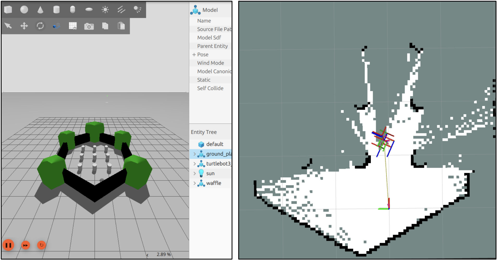

Gallery
Click any photo to view it larger.

Role attribution and project team divisions using Miro (Editable by all team members)

Gantt chart
Force field analysis schematic
Code schematic accross all teams. To manage the project I had to develop an understanding of all subsystems of the robot. This Miro schematic allowed all teams to understand how their contribution interacted with other teams.
Initially, I attemped to use haarcascades lower body model to detect a user's lower body in OpenCV. This was coherent due to the robot's small size, making it see the user's lower body. However, this model appeared to be trained on full body images, making it unreliable when presented with partial bodies.
The most functional approach was to use MediaPipe pose detection with a camera inclined upward. Pose detection appeared more effective at recognizing partial body parts. This was integrated within the Base station laptop's UI, and allowed the robot to follow users on demand, by calculating the detection box' offset from center and sending serial commands accordingly.
